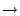

In their simplest form, declarations of lexical functions consist of a
sequence of zero or more symbols followed by `' and a
result symbol, say  . A lexical function may be followed by a list
of attributes. The regular expression associated with
. A lexical function may be followed by a list
of attributes. The regular expression associated with  consists of the
logical or of all left-hand sides of lexical functions with result sort
consists of the
logical or of all left-hand sides of lexical functions with result sort
 . All sort names appearing in left-hand sides of declarations are replaced
by the regular expression associated with them.
Figure 4 shows
Below[]CODE:simplelex we give
an example of a
simple lexical function definition for defining the first three words that
Dutch children learn to read. The three sorts Aap, Noot and Mies, each recognize, respectively, the strings aap, noot and
mies. The sort LeesPlank (a reading-desk used in primary
education) recognizes the single string aapnootmies.
. All sort names appearing in left-hand sides of declarations are replaced
by the regular expression associated with them.
Figure 4 shows
Below[]CODE:simplelex we give
an example of a
simple lexical function definition for defining the first three words that
Dutch children learn to read. The three sorts Aap, Noot and Mies, each recognize, respectively, the strings aap, noot and
mies. The sort LeesPlank (a reading-desk used in primary
education) recognizes the single string aapnootmies.